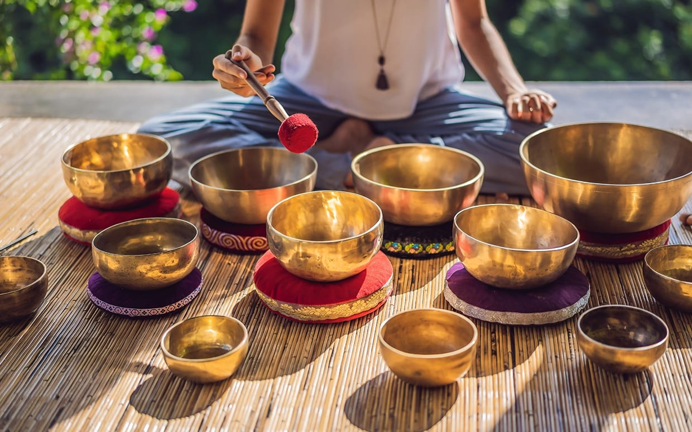

Aromaterapia

La aromaterapia es una práctica ancestral que utiliza los aceites esenciales de las plantas para promover el bienestar del cuerpo, la mente y el espíritu. Cada aroma actúa como un puente hacia nuestras emociones más profundas, ayudándonos a liberar tensiones, equilibrar la energía y despertar sensaciones de calma y vitalidad. Más que un simple perfume, la aromaterapia es una herramienta de sanación natural y espiritual: nos invita a reconectar con la sabiduría de la naturaleza, armonizar nuestras emociones y crear espacios de paz interior.
Sound Healing
El sound healing, o sanación con sonido, se basa en la vibración de instrumentos sagrados como cuencos, handpans o tambores, que actúan sobre nuestras frecuencias internas. Al escuchar y sentir estos sonidos, el cuerpo y la mente entran en un estado de profunda relajación, favoreciendo la liberación de bloqueos y el equilibrio energético. Más allá de la música, el sonido es una medicina vibracional que nos conecta con nuestra esencia, calma la mente y despierta la conciencia espiritual. Cada vibración es un recordatorio de que todo en el universo está en movimiento y que podemos sintonizar con esa armonía para sanar y expandirnos.
